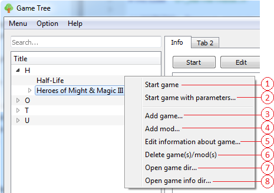
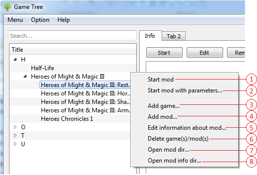

Контекстное меню виджета отображения игр/модов
Контекстное меню бывает 4 видов. Для вызова каждого из них необходима нажать ПКМ(правая клавиша мыши) в определенной области.
Для вызова данного меню, необходимо нажать ПКМ на пустой области виджета отображения.
Содержание
- Открывает окно добавления игры.
Для вызова данного меню, необходимо нажать ПКМ на букве.
Содержание
- Открывает окно добавления игры.
- Удаляет из списка букву со всеми играми и модами из под нее.

Для вызова данного меню, необходимо нажать ПКМ на игре.
Содержание
- Запускает выбранную игру.
- Открывает окно запуска игры с параметрами.
- Открывает окно добавления игры.
- Открывает окно добавления мода.
- Открывает окно редактирования игры.
- Удаляет из списка игру со всеми модами из под нее.
- Отрывает папку в которой лежит исполняемы .exe файл, указанный при добавлении игры.
- Отрывает папку игры в директории данного приложения из которой берутся изображения, аудиофайлы и текстовая информация.

Для вызова данного меню, необходимо нажать ПКМ на моде.
Содержание
- Запускает выбранный мод.
- Открывает окно запуска мода с параметрами.
- Открывает окно добавления игры.
- Открывает окно добавления мода.
- Открывает окно редактирования мода.
- Удаляет из списка мод.
- Отрывает папку в которой лежит исполняемы .exe файл, указанный при добавлении мода.
- Отрывает папку мода в директории данного приложения из которой берутся изображения, аудиофайлы и текстовая информация.
Внимание! При удалении, будут также удалены соответствующие папки в папки данного приложения со всеми файлами внутри.